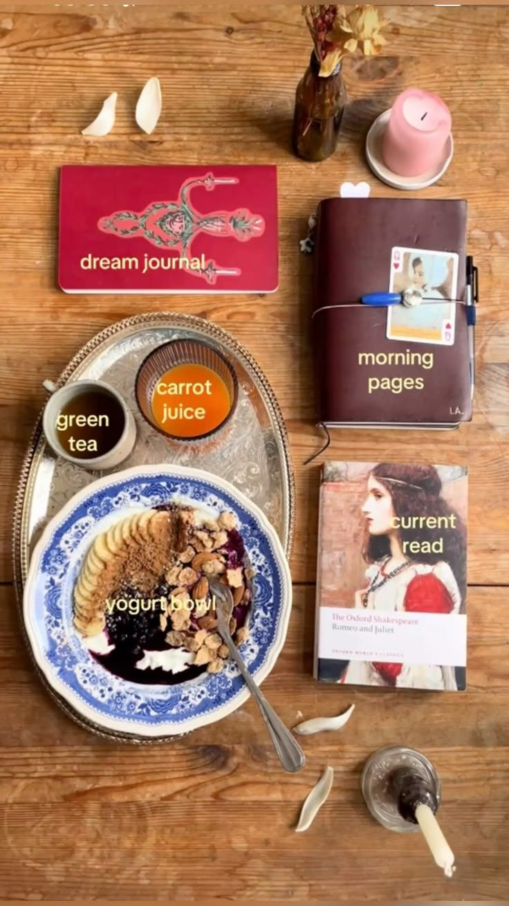

journaling
5 prompts PARA hacer journaling ✮⋆˙

Siempre buscamos empezar nuestra mañana de LA MEJOR manera posible, comiendo lo más rico posible, haciendo tu rutina perfectamente bien y por supuesto, que la cereza del postre ESSS:
tomar un mínimo de 10 min para intencionar tu mañana y tu día entero haciendo journaling… es por ello que te dejo 5 prompts que puedes poner en práctica. ✧
PROMPTS
- ¿Qué palabra quiero mantener presente el día de hoy?
- Nombra 3 cosas por las que estés agradecida.
- Nombra 3 tareas que terminarás hoy.
- ¿Qué merece mi energía, tiempo y atención el día de hoy?
- ¿Qué cosa necesita mi cuerpo, mente y alma hacer antes de darle mi atención a otras cosas?